OCI는 직급별 필수역량에 따른 교육과정을 통해 역량을 개발하고 있습니다. 코로나19 확산으로 인한 유연근무제 시행 중에도 본사 및 사업장 임직원을 대상으로 화상회의 Tool을 이용한 비대면 직무교육을 시행하였습니다.
OCI 직급별 육성 체계
글로벌 인재 양성
OCI는 글로벌 인재 양성을 위해 외국어 과정, 해외 파견자 과정 등의 학습 지원체계를 운영하고 있습니다. 특히 코로나19로 인한 대면교육 진행의 어려움을 극복하고자 전 과정을 화상 전화 외국어 과정으로 진행하였으며, Mobile-Learning Program 운영을 통해 모든 임직원들이 시공간 제약없이 학습할 수 있는 환경을 마련하였습니다. 해외 파견자를 대상으로는 집중 화상 전화 외국어, 이문화 진단 및 학습 등의 프로그램을 통해 현지 적응을 지원하고 있습니다.
일하기 좋은
근무환경 조성
주 40시간 근무제도와 함께 코로나19 확산에 따라 방역과 안전을 위해 재택·분산근무를 시행하고 이러한 원격근무 중에서도 업무효율을 높일 수 있도록 재택근무 가이드라인을 직원들에게 제공하였습니다. 또한 상호존중 캠페인을 1,2차에 걸쳐 진행하면서 직원들이 서로 존중하며 일하는 분위기를 만들어나가도록 하고 있습니다. 이 외에도 OCI는 다양한 복리후생을 통해 임직원의 건강 및 복지증진을 위해 노력하고 있습니다.
임직원 복리후생 지원 제도
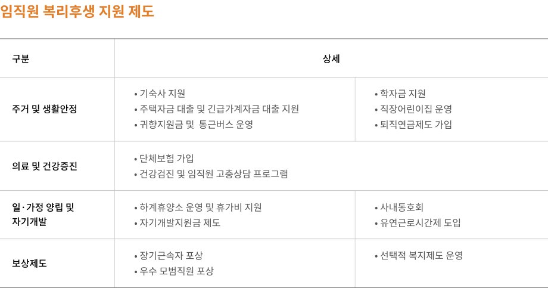
임직원 다양성 존중
OCI는 임직원의 다양성을 존중하며, 채용, 업무 수행, 승진 등 모든 근무 과정에서의 나이, 성별, 인종, 출신국가 등에 따른 차별을 두지 않습니다. 또한 장애인, 국가보훈자 등 다양한 소수계층 인력을 매년 채용하고 있습니다.
임직원 다양성
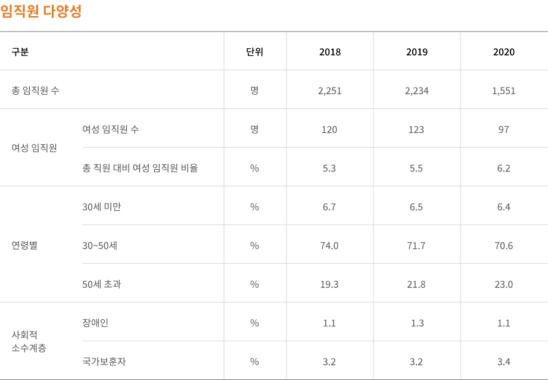
협력사 상생협력
협력사 상생경영
OCI는 협력사 경쟁력 강화를 위해 ‘Visibility’, ‘Speed’, ‘Flexibility’를 바탕으로 공급망 관리 전략을 추진하고 있습니다. 공정하고 투명한 프로세스를 통해 협력사와 공정 거래를 준수하고 역량 강화 및 동반성장 활동을 추진함으로써 상생경영을 실천하고 있습니다. 2020년 기준 OCI와 거래 관계에 있는 협력업체는 861개이며, 협력업체를 통한 구매금액은 총 7,524억 원입니다.
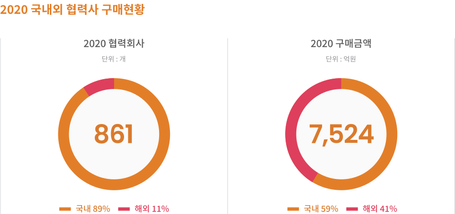
동반성장 추진
OCI는 기술협력, 금융지원 및 경영지원 등 동반성장 프로그램을 운영 및 관리하며, 협력사와 동반성장할 수 있는 기반을 다지고 있습니다. 지속적인 동반성장 프로그램을 발굴 및 추진함으로써 협력사 상생협력 확산을 위해 노력하겠습니다.
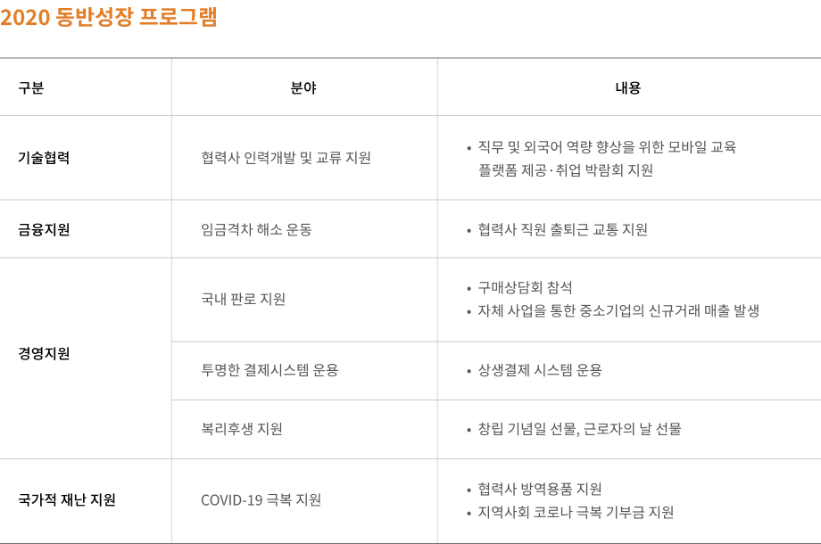
협력사 공정거래 및
파트너십 강화
OCI는 임직원들이 협력사와 공정한 거래관계를 구축하고 협력사 상생협력의 중요성을 인지할 수 있도록 노력하고 있습니다. 공정거래위원회의 4대 실천사항을 준수하여 공정거래 질서를 강화하고 있으며, 하도급 계약 관리 및 공정거래 정책 준수 등을 통해 불공정 행위를 방지하고 있습니다. 뿐만 아니라 하도급 법의 주요 내용, 하도급 공정거래 방식, 법규 위반 시의 제재 사항에 대해 정기적인 교육을 실시하여 협력사 공정거래 질서를 강화하고 있습니다.
또한 소통 채널 운영 및 강화를 통해 협력사와 파트너십을 구축하고 있습니다. 동반성장 정책 공유 및 협력사 성장 방안 모색을 위해 동반성장 관련 워크샵을 매년 개최하였지만 2020년에는 코로나19의 확산으로 인해 개최하지 않았습니다. OCI는 이와 더불어 전자구매시스템에 불공정거래 신고센터를 운영하여 고충 사항을 수렴 및 처리하고 있습니다.
공급망 리스크 관리 강화
OCI는 협력사와의 거래 중 발생할 수 있는 리스크를 예방하기 위해 공정하고 투명한 협력회사 관리 프로세스를 구축하고자 합니다. 기존 및 신규 거래업체를 대상으로 종합적인 분석을 실시하고 정기적인 평가 및 실사를 진행하고 있습니다. 또한 지속적인 모니터링으로 협력사의 문제점 및 개선 사항을 파악하고 있습니다. 이를 통해 공급망에서 발생 가능한 리스크를 사전에 예방하고 협력사 별 맞춤 관리 활동을 진행하고 있습니다.
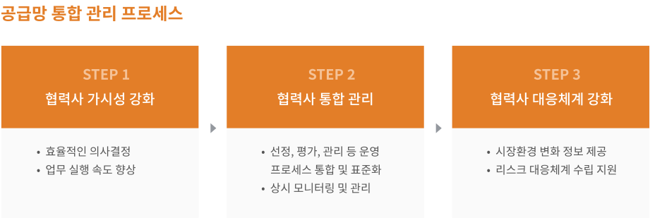
전략적 사회공헌
사회공헌활동체계
OCI는 진정성, 공정성, 지속성, 직원 참여의 4가지 기본 원칙에 기반을 둔 ‘어려움은 나눌수록 작아지고, 사랑은 나눌수록 커진다’의 테마를 바탕으로 전략적 사회공헌을 실천하고 있습니다.
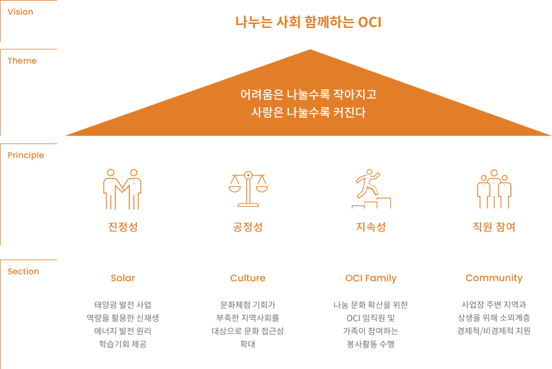
대표 공헌 활동
OCI드림 ‘드림 앙상블’
OCI는 음악적 재능이 있는 장애인들의 사회적·예술적 가치를 실현하고자 전문 클래식 연주단인 드림 앙상블을 창단하였습니다. 드림 앙상블은 바이올린, 첼로, 피아노 연주자로 구성되어 있으며, OCI 자회사형 장애인 표준사업장인 OCI드림의 소속 연주단으로 활동하고 있습니다. 드림 앙상블 단원들은 2019년 창단 이후 장애인에 대한 인식을 긍정적으로 개선하고 장애인과 비장애인이 함께 살아가는 사회를 만들고자 합니다.
드림 앙상블
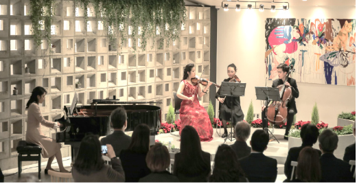
코로나19 지원활동
해외 주재원 지원 활동
OCI는 코로나19 팬데믹으로 해외 각지에서 어려움을 겪고 있는 해외 주재원들을 위해 홍삼 선물세트와 CEO 레터를 전달하였습니다. 이번 이벤트는 코로나19로 인해 귀국 제한이나 현지 생활환경 악화로 인해 어려움을 겪고 있는 해외 주재원들을 지원하기 위해 마련되었으며, 중국, 말레이시아, 미국, 베트남, 일본 법인에 각각 전달하였습니다.
OCI 미국법인 격려품 전달식
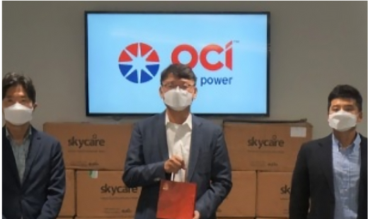
희망드림 물품 전달
OCI 포항공장은 코로나19 사태 장기화로 인해 어려움을 겪고 있는 지역주민을 지원하기 위해 마스크와 손세정제로 구성된 희망드림 상자를 전달하였습니다. 이번 지원 활동은 OCI 임직원들의 자발적인 참여를 통해 1004 성금을 조성하여 대한적십자사에서 5만 원 상당의 생필품 상자를 제작하였으며, 인근 포항 지역의 주민 150 가구를 선정해 전달하였습니다.
코로나 극복 희망드림 물품 전달식
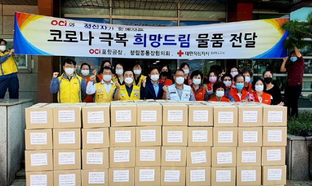
사랑의 김장김치 나눔
OCI 광양공장은 연말을 맞아 코로나19로 생활에 어려움을 겪는 이웃을 위해 광양시 사랑나눔 복지재단을 통해 김장김치 1,700kg(약 1천만 원 상당)를 전달하였습니다. 이번 나눔 활동은 건강한 먹거리 제공 및 겨울나기를 위해 태인동 독거노인, 소외계층 150여 세대 및 광양시 관내 인근의 지역아동센터 18곳에 전달되었습니다.
사랑의 김장김치 나눔
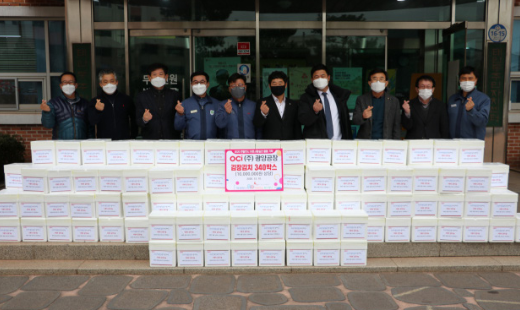
지역사회 공헌 활동
어린이보육재단 기부금 기탁식
OCI는 광양공장 임직원들이 후원한 ‘사랑의 1004 기금’을 통해 2020년 7월, 광양시 어린이보육재단에 1,500만 원의 기부금을 기탁하였습니다. 이번 기부 행사 참여는 OCI 광양공장이 지역사회 구성원으로서 광양시의 ‘아이 키우기 좋은 행복도시’ 비전 달성에 동참하기 위해 실시되었습니다.
광양시 어린이보육재단 후원금 기탁식
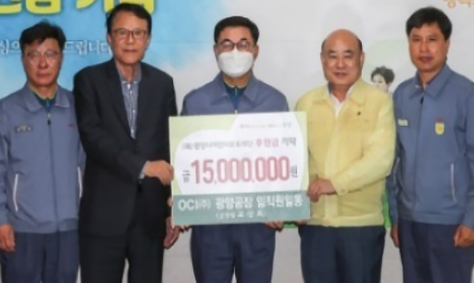
노인용 보행 보조기 지원
2020년 10월, OCI 광양공장은 광양시 태인동에 총 약 700만 원 상당의 노인용 보행 보조기 47대를 기부하는 기탁식을 진행하였습니다. 이번 기부 행사는 태인동에 거주하는 65세 어르신 중 거동이 불편한 어르신과 90세 이상의 어르신에게 전달할 목적으로 추진되었습니다. OCI는 앞으로도 지역사회 환원사업의 일환으로 다양한 사회공헌 활동에 참여하여 지역사회의 소외 계층 지원을 위한 노력에 힘쓰겠습니다.
노인용 보행 보조기 지원
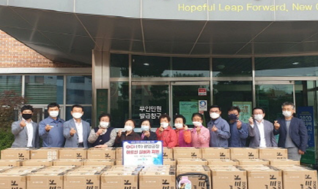
사랑의 연탄 나눔
OCI 군산공장의 천사봉사대는 2020년 11월, 공장 인근 결연마을의 어려운 이웃을 위해 연탄 4,000장을 후원하는 전달식을 가졌습니다. 이번 행사는 OCI 임직원들의 급여 일부를 모아 진행된 것으로 후원된 연탄은 결연마을 내 독거노인 소외된 가정들에게 전달되었습니다.